Towada
Towada · Aomori
Towada
Highlighted on the Aomori map.
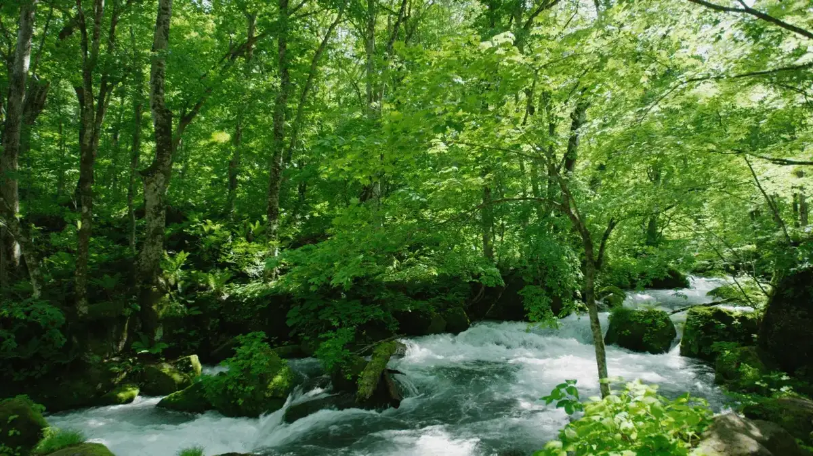
Stay
ホテルルートイン十和田
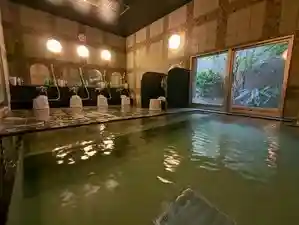
Hoteruruutoin Towada
スマイルホテル十和田
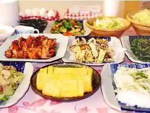
Sumairuhoteru Towada
天然温泉 奥入瀬の湯 スーパーホテル十和田
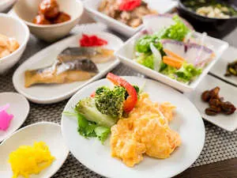
Tennen Onsen Oirase No Yu Suupaahoteru Towada
旅館大阪屋
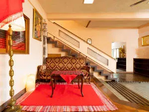
Ryokan Oosaka Ya
トレイルイン十和田(Trailinn十和田)
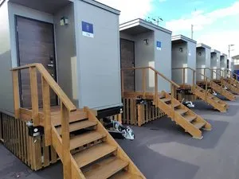
Toreiruin Towada (Trailinn Towada )
十和田シティホテル（旅館しもやま改め）
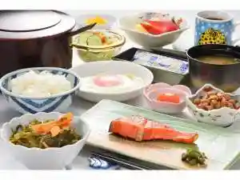
Towada Shiteihoteru ( Ryokan Shimoyama Aratame )
天然温泉掛け流しの宿 ホテルポニー温泉
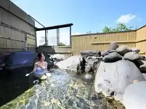
Tennen Onsen Kake Nagashi No Yado Hoteruponii Onsen
奥入瀬 森のホテル
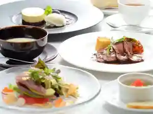
Oirase Mori No Hoteru
温泉旅館 遊魚荘
Onsenryokan Yuugyo Sou
奥入瀬渓流温泉 灯と楓
Oirase Keiryuu Onsen Tomoshibi To Momiji
野の花 焼山荘
No No Hana Takiyama Sou
奥入瀬ゲストハウス 桂 月
Oirase Gesutohausu Katsura Gatsu
Dining
牛角 十和田店
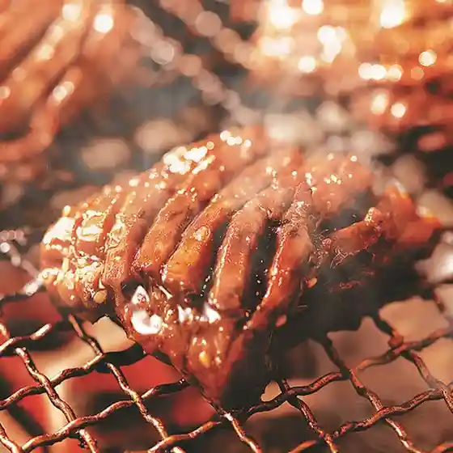
Gyuukaku Towada Mise
十和田はつ花 蕎麦＆ワイン居酒屋
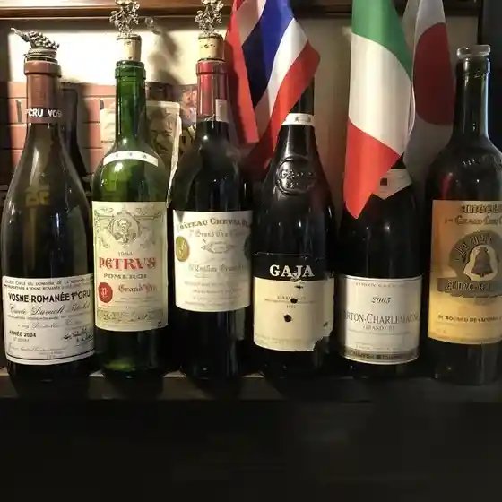
Towada Hatsu Hana Soba & Wain Izakaya
魚民 十和田稲生町店

Uotami Towada Inao Machi Mise
スペアリブハウス ハウディ 十和田店
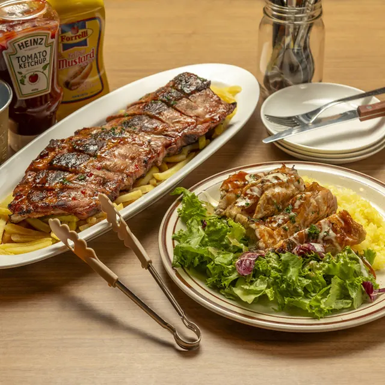
Supearibuhausu Haudi Towada Mise
青森中華YUMiＯ
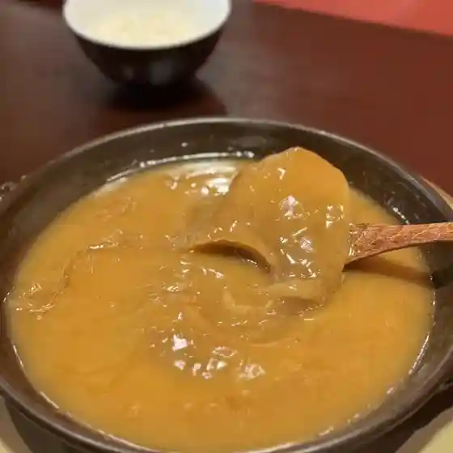
Aomori Chuuka Yumi O
居酒屋現代
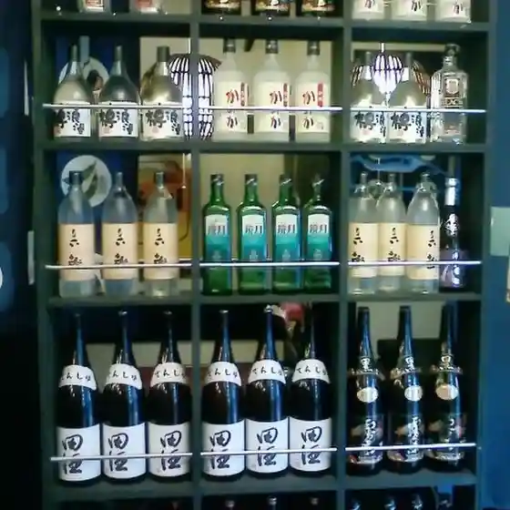
Izakaya Gendai
食彩館 うれし野
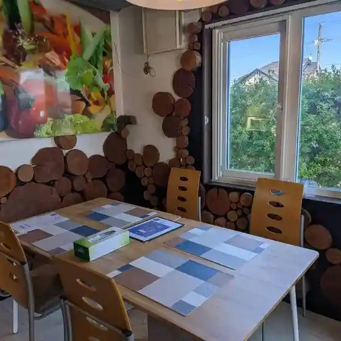
Shokusai Kan Ureshi No
ビークラブ
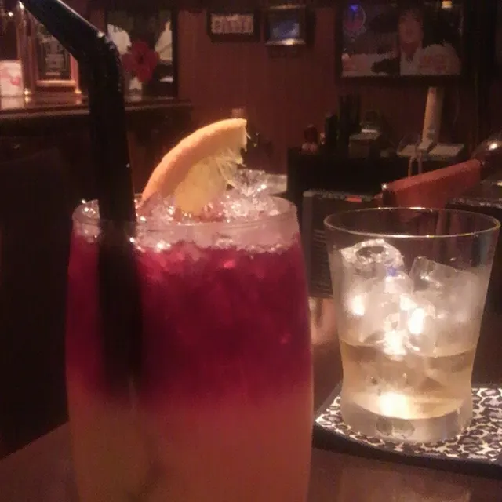
Biikurabu
すぱげ亭
Supage Tei
丸亀製麺 十和田
Marugame Seimen Towada
らんち屋
Ranchi Ya
モスバーガー 十和田東一番町店
Mosubaagaa Towada Touichi Banchou Mise
フナバヤシ
Funabayashi
CHIYODA COFFEE
Chiyoda Coffee
喫茶ひめはうす
Kissa Himehausu
ソノール
Sonooru
中華料理 紅蘭
Chuukaryouri Kouran
イオンスーパーセンター 十和田店
Ionsuupaasentaa Towada Mise
ファミリーマート 十和田相坂店
Famiriimaato Towada Aisaka Mise
食事処 味美
Shokuji Tokoro Ajiyoshi
和海
Wa Umi
十和田馬肉店 十和田営業所
Towada Baniku Mise Towada Eigyousho
セブンイレブン 十和田稲生町店
Sebun'Irebun Towada Inao Machi Mise
花咲庵
Hanasaki Iori
Sights
Suiren-numa Pond
920 m highland pond on Mt. Hakkoda that mirrors the peaks, with water lilies in early summer.
Kimigara Slippers
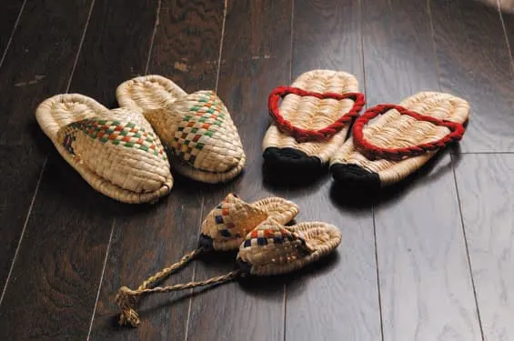
Traditional slippers woven from dent corn husks, a craft of horse-breeding Towada.
Utarube Campsite
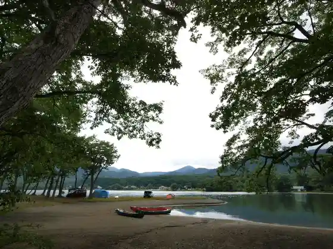
The campsite in the quiet and rich forest, located on the Ogura Peninsula at the Towada Lakeside, have beautiful view of the Lake Towada in front and Mount Hakkoda at some distance.